Práctica-IAW.1.1
En esta practica vamos a crear una pila LAMP y todas las herramientas adicionales en una instancia EC2 en Amazon Web Services (AWS) con la última versión de Ubuntu Server.
[!IMPORTANT]
Antes de empezar a configurar los archivos vamos a crear la siguiente estructura de archivos y directorios(el directorio imagenes no es necesario)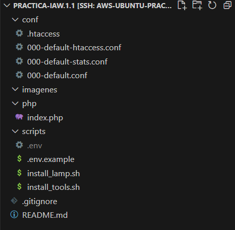
Configuración del archivo install_lamp.sh
Vamos a empezar configurando el archivo install_lamp(script que normalmente se utiliza para automatizar la instalación y configuración de un servidor ).
1.1 Primeros pasos
Lo primero que tenemos que hacer es poner lo siguiente:
#!/bin/bash
set -ex
apt update
apt upgrade -y
#!/bin/bash: Indica al sistema que intérprete debe usar para ejecutar el script
set -ex: El script se detendra en caso de error y además muestra comando antes de que sea ejecutado,
apt update y upgrade: Actualización de repositorios y paquetes. -y se usa para aceptar automaticamente las preguntas que nos pueden hacer en la actualización, lo que automatiza el proceso
1.2 Instalación de Apache
Ahora vamos a instalar Apache,un servidor web que nos permite alojar sitios aplicaciones en la web
apt install apache2 -y
Habilitamos el módulo rewrite, que permite reescribir las URLs y configurar reglas de redireccionamiento, para hacerlas más amigables y mejorar el SEO de los sitios web.
a2enmod rewrite
[!IMPORTANT]
Antes de seguir tenemos que tener configurado el archivo000-default.confde esta forma: 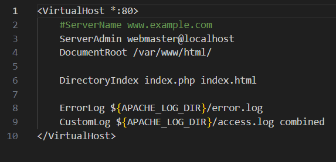
DirectoryIndex:Configura el orden prioridad de los archivos que se van a mostrar cuando se accede a un directorio
ErrorLog:Establece la ubicación del archivo de registro donde se almacenarán los mensajes de error generados por el servidor.
Custom Log:Define el archivo de registro de acceso donde se guardarán las solicitudes HTTP que recibe el servidor
Copiamos el archivo de configuración de Apache en la ruta /etc/apache2/sites-available
cp ../conf/000-default.conf /etc/apache2/sites-available
Instalamos PHP y algunos módulo para Apache y MySQL
apt install php libapache2-mod-php php-mysql -y
Creamos los directorios para alojar cada uno de los sitios web
mkdir -p /var/www/html/web1
mkdir -p /var/www/html/web2
Creamos los archivos de configuración para cada uno de los sitios web. Empezamos por el sitio web 1.
nano /etc/apache2/sites-available/web1.conf
Una vez dentro añadimos esto
<VirtualHost *:80>
ServerAdmin webmaster@web1.com
ServerName web1.com
DocumentRoot /var/www/html/web1
ErrorLog ${APACHE_LOG_DIR}/error.log
CustomLog ${APACHE_LOG_DIR}/access.log combined
</VirtualHost>
Hacemos los mismos pasos para la web 2 pero añadimos esto
<VirtualHost *:80>
ServerAdmin webmaster@web2.com
ServerName web2.com
DocumentRoot /var/www/html/web2
ErrorLog ${APACHE_LOG_DIR}/error.log
CustomLog ${APACHE_LOG_DIR}/access.log combined
</VirtualHost>
Deshabilitamos el sitio virtual que viene por defecto
sudo a2dissite 000-default.conf
Y habilitamos los nuevos que hemos creado
sudo a2ensite web1.conf
sudo a2ensite web2.conf
Para que se aplique la nueva configuración es necesario ejecutar el comando
sudo systemctl reload apache2
Editamos el archivo /etc/hosts de nuestro equipo para resolver los nombres de dominio de forma local en nuestro entorno de desarrollo.
34.206.30.8 web1.com
34.206.30.8 web2.com
[!IMPORTANT] Antes de seguir tenemos que tener configurado el archivo index.php de esta forma:
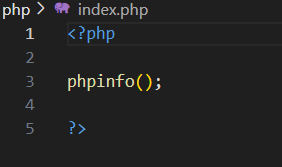
Copiamos el script de prueba de PHP en /var/www/html
cp ../php/index.php /var/www/html
Modificamos el propietario y el grupo del archivo index.php
chown -R www-data:www-data /var/www/htm
-R:Recursivo.Indica que el cambio de propietario debe aplicarse no solo al directorio especificado, sino también a todos los archivos y subdirectorios dentro de él
Hechas estas configuraciones si ponemos nuestra ip en algun navegador nos deberia salir esto 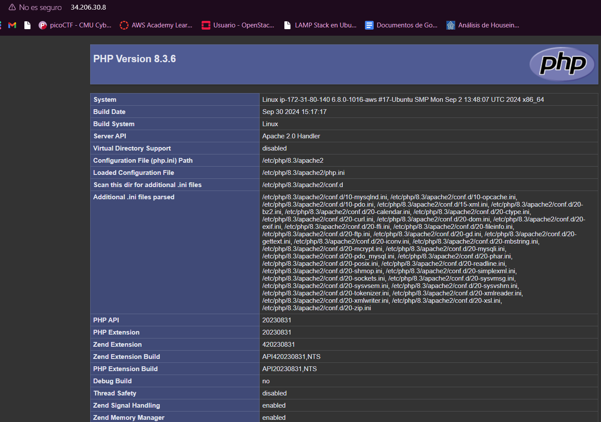
1.3 Instalación de MySQL Server
Ahora vamos a instalar el sistema gestor de bases de datos MySQL
apt install mysql-server -y
Una vez instalado podemos acceder a el mediante terminal
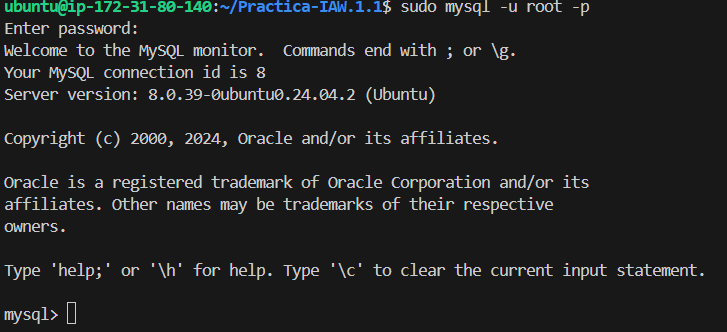
Despues de estas configuraciones y añadir algunos de los comandos al script, deberia quedar asi:
#!/bin/bash
# Configuramos para mostrar los comandos y finalizar si hay error
set -ex
# Actualizamos los repositorios
apt update
# Actualiza los paquetes
apt upgrade -y
# Instalamos el servidor web Apache
apt install apache2 -y
# Habilitamos el modulo rewrite
a2enmod rewrite
# Copiamos el archivo de configuración de Apache
cp ../conf/000-default.conf /etc/apache2/sites-available
# Instalamos PHP y algunos módulos de php para Apache y MySQL
apt install php libapache2-mod-php php-mysql -y
# Reiniciamos el servicio de Apache
systemctl restart apache2
# Instalamos MYSQL Server
apt install mysql-server -y
# Copiamos el script de prueba de PHP en /var/www/html
cp ../php/index.php /var/www/html
# Modificamos el propietario y el grupo del archivo index.php
chown -R www-data:www-data /var/www/html
Configuración del archivo install_tools.sh
Ahora vamos a configurar el archivo install_tools, que incluye herramientas necesarias para la instalación de la pila LAMP
2.1 Primeros pasos
Al igual que en el otro script, aquí tambien tendremos que poner lo siguiente:
#!/bin/bash
set -ex
apt update
apt upgrade -y
Hecho esto vamos a importar el archivo de variables para tener acceso a estas variables
source .env
[!IMPORTANT]
Estas variables no las tenemos en este script porque estan almacenadas en el archivo .gitignore, cuya función es especificar qué archivos o directorios deben ser ignorados por Git. El archivo .env que es el que almacena las contraseñas esta almacenado ahí para proteger la intengridad de estos datos importantes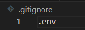
El archivo env deberia contener algo parecido a esto pero con los valores de las variables(en la captura se han eliminado para proteger estos datos)
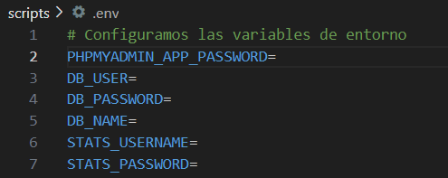
[!TIP] Para poder saber las variables que se configura se hace un archivo llamado
env.exampleen que ponemos las variables sin sus valores(este archivo si se guarda en git) 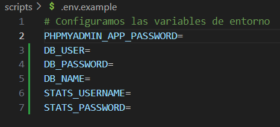
2.2 Instalación de phpMyAdmin
Automatizamos las respuestas de phpmyadmin cuando se está actualizando, evitando tener que añadirlo manualmente
echo "phpmyadmin phpmyadmin/reconfigure-webserver multiselect apache2" | debconf-set-selections
echo "phpmyadmin phpmyadmin/dbconfig-install boolean true" | debconf-set-selections
echo "phpmyadmin phpmyadmin/mysql/app-pass password $PHPMYADMIN_APP_PASSWORD" | debconf-set-selections
echo "phpmyadmin phpmyadmin/app-password-confirm password $PHPMYADMIN_APP_PASSWORD" | debconf-set-selections
Configuradas las respuestas pasamos a instalar phpMyAdmin
apt install phpmyadmin php-mbstring php-zip php-gd php-json php-curl -y
2.3 Instalación de Adminer
Ahora pasamos a instalar Adminer,una herramienta de gestión de bases de datos basada en web que permite a los usuarios administrar y manipular bases de datos de forma sencilla y eficiente
Creamos un directorio para Adminer
mkdir -p /var/www/html/adminer
-p:Indica la ruta donde queremos guardar el archivo
Descargamos Adminer
wget https://github.com/vrana/adminer/releases/download/v4.8.1/adminer-4.8.1-mysql.php -P /var/www/html/adminer
Renombramos el nombre del script de Adminer a uno más sencillo
mv /var/www/html/adminer/adminer-4.8.1-mysql.php /var/www/html/adminer/index.php
Modificamos el propietario y el grupo del archivo
chown -R www-data:www-data /var/www/html/adminer
Hecho esto deberia ir si ponemos nuestra ip/adminer en un buscador 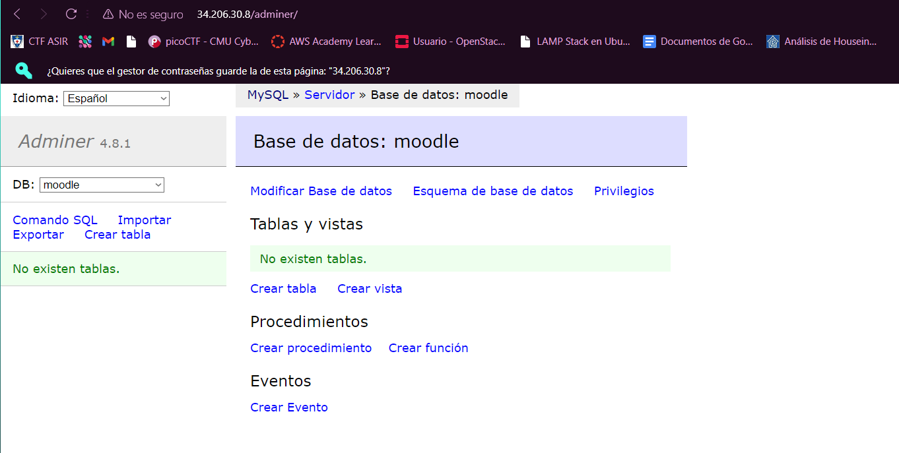
2.4 Complementos mySQL
Vamos a crear una base de datos de ejemplo
mysql -u root <<< "DROP DATABASE IF EXISTS $DB_NAME"
mysql -u root <<< "CREATE DATABASE $DB_NAME"
Y un usuario para esta base de datos
mysql -u root <<< "DROP USER IF EXISTS '$DB_USER'@'%'"
mysql -u root <<< "CREATE USER '$DB_USER'@'%' IDENTIFIED BY '$DB_PASSWORD'"
mysql -u root <<< "GRANT ALL PRIVILEGES ON $DB_NAME.* TO '$DB_USER'@'%'"
Ahora si nos vamos a nuestra IP/phpmyadmin nos deberia salir algo parecido a esto: 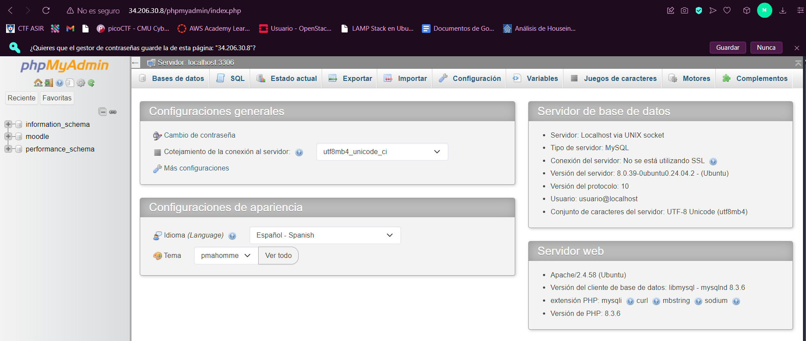
2.5 Instalación de GoAcces
GoAccess es una herramienta de análisis de logs en tiempo real y de visualización de datos
Primero lo instalamos
apt install goaccess -y
Luego creamos un directorio para los informes estadisticos
mkdir -p /var/www/html/stats
Finalmente ejecutamos GoAcces en background
goaccess /var/log/apache2/access.log -o /var/www/html/stats/index.html --log-format=COMBINED --real-time-html --daemonize
real-time-html: Genera un informe que se actualiza en tiempo real
daemonize: Hace que se ejecute como un proceso en segundo plano
2.6 Control de acceso a un directorio con autentificación básica
[!IMPORTANT]
Antes de seguir tenemos que tener configurado el archivo000-default.stats.conf de esta manera: 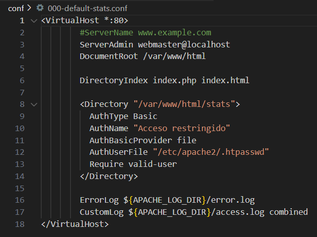
Copiamos el archivo default stats a /etc/apache2/sites-available
cp ../conf/000-default-stats.conf /etc/apache2/sites-available
Deshabilitamos el virtualhost que hay por defecto
a2dissite 000-default.conf
Habilitamos el nuevo Virtualhost
a2ensite 000-default-stats.conf
Hacemos un reload a apache
systemctl reload apache2
Creamos el archivo de contraseñas
htpasswd -bc /etc/apache2/.htpasswd $STATS_USERNAME $STATS_PASSWORD
-bc: Para poder incluir este comando en un script de bash,de este modo podemos indicarle el nombre del usuario y la contraseña como parámetros
2.7 Control de acceso a un directorio con htaccess
Htaccess permite realizar ajustes en la configuración del servidor sin necesidad de modificar el archivo de configuración principal de Apache
[!IMPORTANT]
Antes de seguir tenemos que tener configurado el archivo000-default-htaccess.confasi: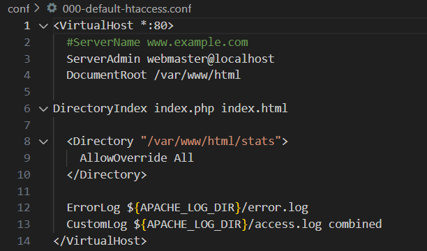
Copiamos el archivo default-stats ```bash cp ../conf/000-default-htaccess.conf /etc/apache2/sites-available
Deshabilitamos el virtualhost 000-default-stats.conf
```bash
a2dissite 000-default-stats.conf
Habilitamos el nuevo virtualhost 000-default-htaccess.conf ```bash a2ensite 000-default-htaccess.conf
Hacemos un reload a apache
```bash
systemctl reload apache2
[!IMPORTANT]
Antes de seguir tenemos que tener configurado el archivo.htaccessas: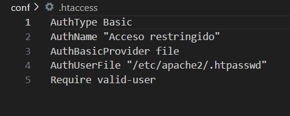
Copiamos el archivo .htaccess a /var/www/html/stats para que al entrar a la web nos pida las credenciales ```bash cp ../conf/.htaccess /var/www/html/stats
Ahora si nos vamos a nuestra IP/stats nos pedirá que iniciemos sesión con nuestra credenciales

Una vez introducidas las credenciales tendremos acceso al panel de control

Ya tendriamos completo el script que quedaria tal que asi:
```bash
#!/bin/bash
# Importamos el archivo de variables
source .env
# Configuramos para mostrar los comandos y finalizar si hay error
set -ex
# Actualizamos los repositorios
apt update
# Actualiza los paquetes
apt upgrade -y
# Configuramos las respuestas para la instalación de phpMyAdmin
echo "phpmyadmin phpmyadmin/reconfigure-webserver multiselect apache2" | debconf-set-selections
echo "phpmyadmin phpmyadmin/dbconfig-install boolean true" | debconf-set-selections
echo "phpmyadmin phpmyadmin/mysql/app-pass password $PHPMYADMIN_APP_PASSWORD" | debconf-set-selections
echo "phpmyadmin phpmyadmin/app-password-confirm password $PHPMYADMIN_APP_PASSWORD" | debconf-set-selections
# Instalamos phpMyAdmin
apt install phpmyadmin php-mbstring php-zip php-gd php-json php-curl -y
#-----------------------------------------------------------------------------------------------------------------------
# Instalamos Adminer
# Paso 1. Creamos un directorio para Adminer
mkdir -p /var/www/html/adminer
# Paso 2. Descargamos Adminer
wget https://github.com/vrana/adminer/releases/download/v4.8.1/adminer-4.8.1-mysql.php -P /var/www/html/adminer
# Paso 3. Renombramos el nombre del script de Adminer
mv /var/www/html/adminer/adminer-4.8.1-mysql.php /var/www/html/adminer/index.php
# Paso 4. Modificamos el propietario y el grupo del archivo
chown -R www-data:www-data /var/www/html/adminer
#------------------------------------------------------------------------------------------------------------------------------
# Creamos una base de datos de ejemplo
mysql -u root <<< "DROP DATABASE IF EXISTS $DB_NAME"
mysql -u root <<< "CREATE DATABASE $DB_NAME"
# Creamos un usuario para la base de datos de ejemplo
mysql -u root <<< "DROP USER IF EXISTS '$DB_USER'@'%'"
mysql -u root <<< "CREATE USER '$DB_USER'@'%' IDENTIFIED BY '$DB_PASSWORD'"
mysql -u root <<< "GRANT ALL PRIVILEGES ON $DB_NAME.* TO '$DB_USER'@'%'"
#--------------------------------------------------------------------------------------------------------------------------------
#Instalación GoAcces
apt install goaccess -y
# Creamos un directorio para los informes estadisticos
mkdir -p /var/www/html/stats
# Ejecutamos Goaccess en background
goaccess /var/log/apache2/access.log -o /var/www/html/stats/index.html --log-format=COMBINED --real-time-html --daemonize
#------------------------------------------------------------------------------------------------------------------------------
#Control de acceso a un directorio con autentificación básica
# Copiamos el archivo default stats
cp ../conf/000-default-stats.conf /etc/apache2/sites-available
# Deshabilitamos el virtualhost que hay por defecto
a2dissite 000-default.conf
# Habilitamos el nuevo Virtualhost
a2ensite 000-default-stats.conf
#Hacemos la configuración de apache
systemctl reload apache2
# Creamos el archivo de contraseñas
htpasswd -bc /etc/apache2/.htpasswd $STATS_USERNAME $STATS_PASSWORD
#------------------------------------------------------------------------------------------------------------------------------
#Control de acceso a un directorio con .htaccess
# Copiamos el archivo default-stats
cp ../conf/000-default-htaccess.conf /etc/apache2/sites-available
# Deshabilitamos el virtualhost 000-default-stats.conf
a2dissite 000-default-stats.conf
# Habilitamos el nuevo virtualhost 000-default-htaccess.conf
a2ensite 000-default-htaccess.conf
# Recargamos la configuracion de apache
systemctl reload apache2
# Copiamos el archivo .htaccess a /var/www/html/stats
cp ../conf/.htaccess /var/www/html/stats